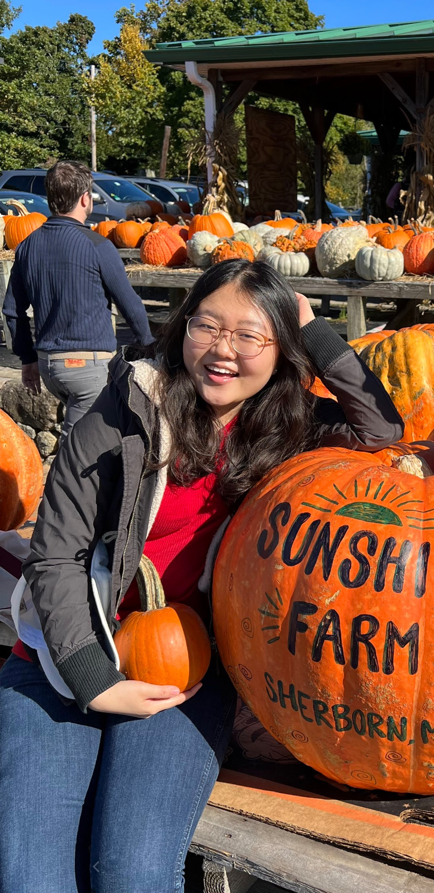
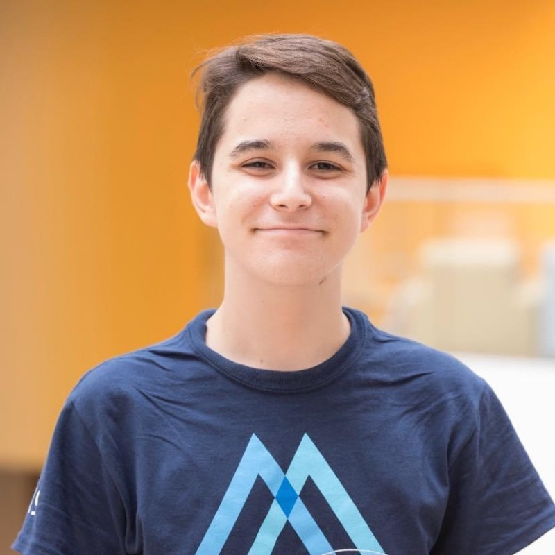
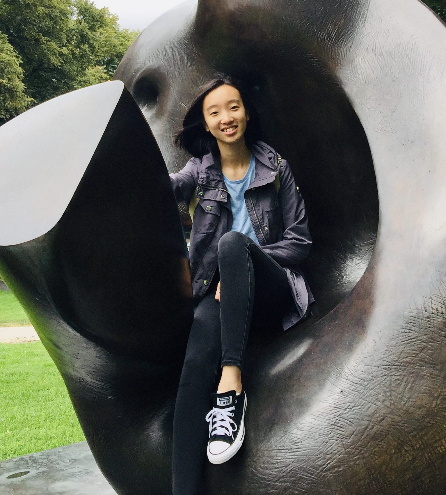
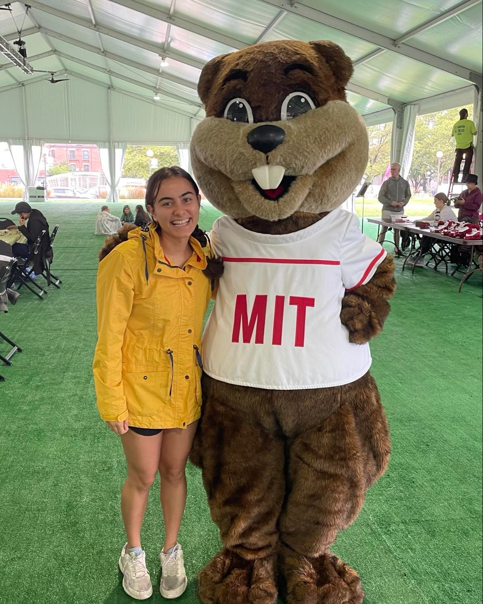
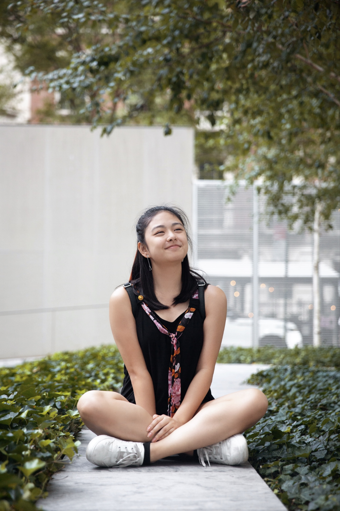
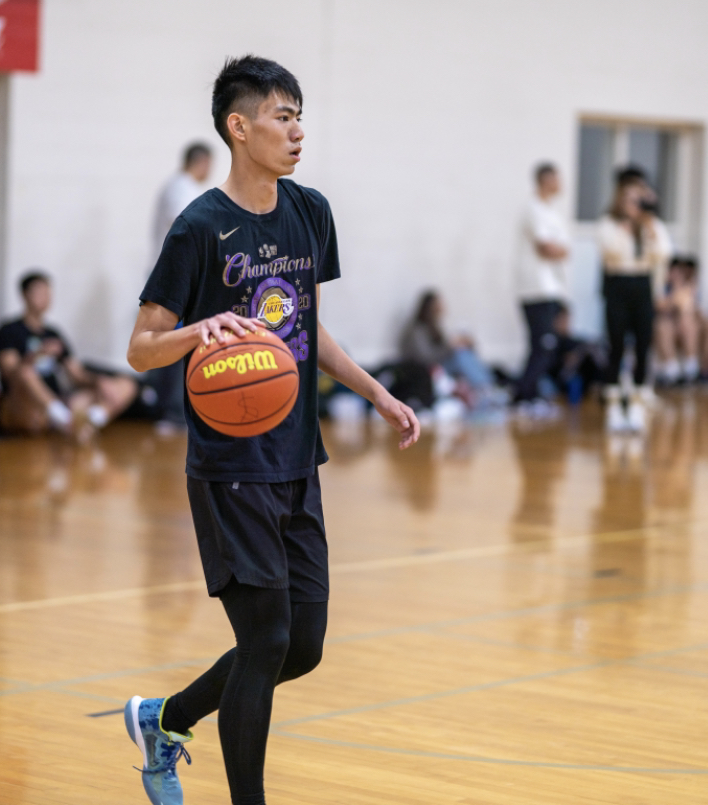
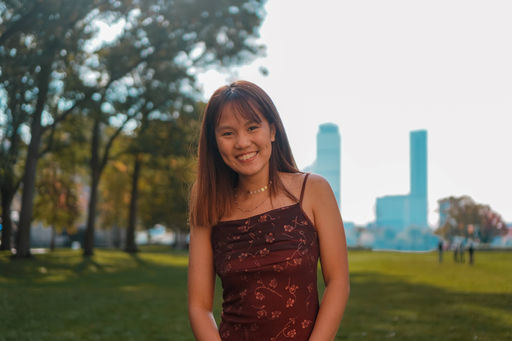
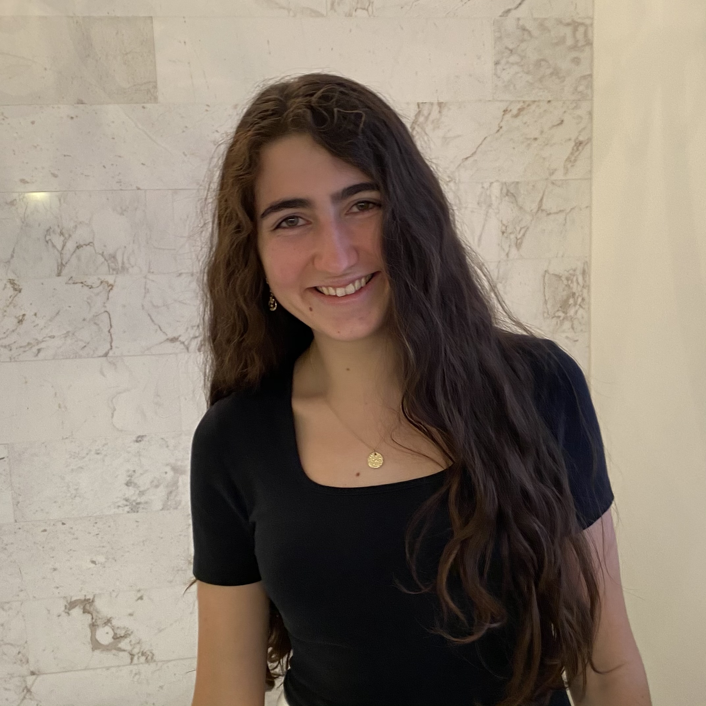

Jimin Lee
Co-President
+ she/her/hers
+ Major: 6-14
Hi! I grew up in sunny S. California but also lived for a bit in beautiful S. Korea. My hobbies include cooking and feeding my friends, exploring Boston, and playing the piano at terrible random jam sessions! I'm interested in improving the US health care and education systems with economics, so hmu if you want to talk about those things. I am also a part of MIT Technique so you'll probably see me out and about taking pictures for this year's yearbook!

Santi Cantu
Co-President
+ they/them/theirs
+ Major: 14-1
From: Houston, TX
Hobbies: Playing Mario Kart, listening to music, watching movies
Economics: Macroeconomics, international trade, development, public policy
Involvement: Debate, student government

Brian Liu
Publicity Chair
+ he/him/his
+ Majors: 6-14 and 18
+ Minor: 21M-1 (Music)
Hi! I'm Brian. I'm a junior from Lansdale, PA, but I've previously lived Indiana, Texas, and New Hampshire. I dance on MIT's Asian Dance Team and play squash, basketball, and volleyball. I also like card and video games, as well as playing clarinet and listening to music. I'm most excited about behavioral economics and game theory!

Alison Fang
Treasurer
+ she/her/hers
+ Majors: 6-14 and 18
Hi! I'm a 2023 from Allentown, PA, and I joined UEA to help create a welcoming environment and fun community for MIT students interested in econ. Econ-related things I like include education, game theory, and behavioral economics. Outside of econ, I love baking, reading, piano, attempting digital art, watching sunsets, and eating food. You can generally find me taking river walks, squirrel watching, fangirling over Hayden, and procrastinating.
Suat Evren
Vice President
+ he/him/his
+ Majors: 6-14 and 18
Hi there! This is Suat. I'm a junior studying 18 and 6-14, and I'm originally from Turkey. I'm particularly interested in social choice theory, market design, and differential privacy (all subject to change, messing around is nice). Other than the UEA, I'm also involved in Beta, MSA, and TSA.
I enjoy "trying my best" to play racket sports when I'm free. I'd like to think I'm quite above average at table tennis, yet not so much at tennis or squash. I prefer doing stuff that does not involve significant use of the analytical part of my brain in my free time, which certainly excludes solving AoPS problems, but includes watching movies – I'm one of those that like Tarantino. Though chilling with my friends is my favorite, such a pleasant activity indeed.

Joy Bhattarcharya
Secretary
+ she/her/hers
+ Major: 6-14
+ Minor: 15-2
I’m from Bloomington, Indiana and became interested in economics after taking 14.01. Outside of coursework, I really enjoy watching movies and am involved with the LSC, you should check out some of our screenings! I also enjoy weightlifting and exploring Boston with friends.

Angela Liu
Diversity Co-Chair
+ she/her/hers
+ Major: 6-14
Hi, I'm Angela! I grew up in Weston, Florida. My favorite topics in econ are econometrics and environmental economics. Outside of class, I love doing ballet. Besides UEA, I am also part of MIT Code for Good and ADT (Asian Dance Team). Feel free to reach out to me if you want to talk about econometrics or if you just want to dance!

Bryant Xia
First-Year Experience Chair
+ he/him/his
+ Major: 14-1 and 18
+ Minor: Computer science
Hi, my name is Bryant and I am currently a second-year student. I was born and raised in Beijing but moved to Lexington, MA for high school. In my spare time I enjoy playing basketball and football (not the American kind).

Sarah Gao
Diversity Co-Chair
+ she/her/hers
+ Major: 6-14 and 18
I'm originally in Colorado and interested in a dabbling of computer science, math, and economics. I am interested in studying labor economics after graduating!

Audrey Lorvo
Academic Exploration Officer
+ she/her/hers
+ Major: 14-1
+ Minor: Statistics and Data Science and International Development
Hi, I’m Audrey from Paris, France. Growing up across Europe, Asia and Latin America has fueled my interest in trade, international development, and socioeconomic inequality. I’m currently conducting research on why poverty has persisted in the United States and why so many programs have failed to eradicate it. In the future I hope to contribute to improving people’s lives by working for a meaningful NGO or international organization, all while continuing to pursue my other passion, exploring the best foods and pastries from every country!